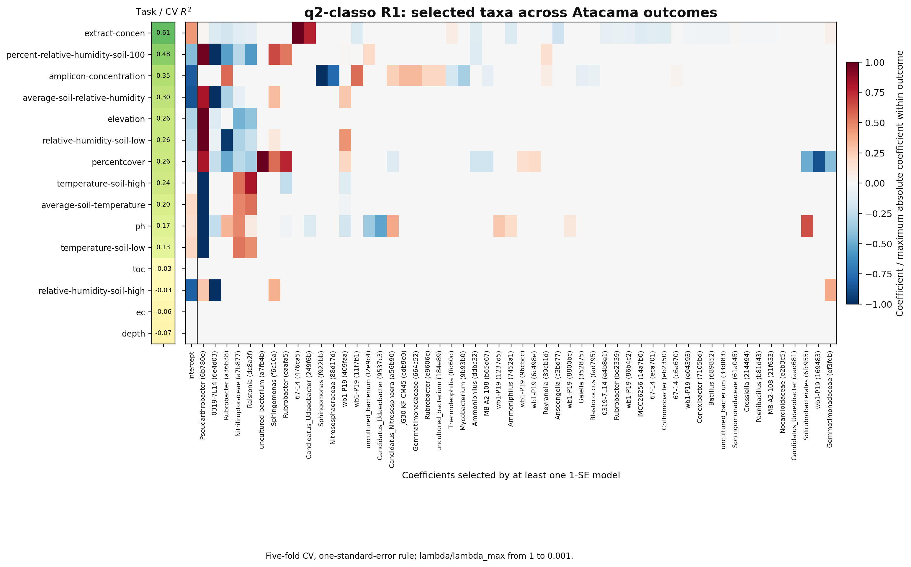
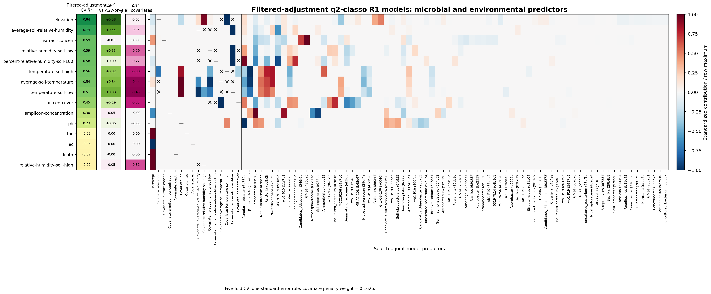

High-Dimensional Example: q2-classo on 300 Atacama ASVs#
This chapter applies q2-classo to the same 300-ASV, 54-sample Atacama design used in the high-dimensional graphical-lasso chapter, predicting each continuous environmental covariate from the microbiome with cross-validated log-contrast regression. It reproduces the reference analysis of Christian L. Müller.
Setup#
Each of the 15 continuous covariates is used once as the outcome; missing outcome values are mean-imputed. Models use the standard log-contrast formulation R1 with an intercept, selected by 5-fold cross-validation with the one-standard-error rule along a log-spaced \(\lambda\) path:
qiime classo regress \
--i-features atacama-top-300-clr-design.qza \
--m-y-file atacama-classo-outcomes-mean-imputed.tsv \
--m-y-column <outcome> \
--p-do-yshift --p-path --p-path-nlam-log 100 --p-path-lamin-log 0.001 \
--p-cv --p-cv-subsets 5 --p-cv-seed 1 --p-cv-one-se \
--p-cv--nlam 100 --p-cv-lamin 0.001 --p-cv-logscale \
--p-no-stabsel --p-no-lamfixed --p-no-concomitant --p-no-huber --p-intercept \
--o-result <outcome>-r1-cv5.qza
Prediction from ASVs only (base R1)#
The out-of-sample \(R^2\) (mean across the 5 folds) shows which environmental variables are predictable from the 300 ASVs alone:

Outcome |
CV \(R^2\) |
|---|---|
extract-concen |
0.61 |
percent-relative-humidity-soil-100 |
0.48 |
amplicon-concentration |
0.35 |
average-soil-relative-humidity |
0.30 |
elevation |
0.26 |
relative-humidity-soil-low |
0.26 |
percentcover |
0.26 |
temperature-soil-high |
0.24 |
average-soil-temperature |
0.20 |
ph |
0.17 |
temperature-soil-low |
0.13 |
toc / relative-humidity-soil-high / ec / depth |
\(\le 0\) |
The first selected taxon (largest-magnitude coefficient column, after the intercept) is a Pseudarthrobacter ASV — a genus characteristic of the Atacama soil community (see the interpretation notes).
Adjusting for environmental covariates (joint and filtered)#
Two variants add the other covariates as extra predictors (each rescaled and
L2-normalized, covariate penalty weight 0.1626):
Joint — add all other covariates as predictors.
Filtered adjustment — add only covariates that are not strongly correlated with the outcome (Pearson \(|r| < 0.80\)), so a covariate that is essentially a proxy for the outcome cannot leak it.
qiime classo add-covariates \
--i-features atacama-top-300-clr-design.qza \
--m-covariates-file atacama-classo-outcomes-mean-imputed.tsv \
--p-to-add <covariate> --p-rescale --p-w-to-add 0.162565105 \
--o-new-features <design>.qza --o-new-c <c>.qza --o-new-w <w>.qza
# then: qiime classo regress --i-features <design> --i-c <c> --i-weights <w> ...
Adding covariates sharply increases predictability of the physically-coupled variables — e.g. soil temperature and humidity — but the filtered analysis removes most of that gain, showing it came largely from outcome-correlated covariates rather than the microbiome:

| Outcome | ASV-only | Joint (all cov.) | Filtered (\(|r|<0.8\)) | |———|———-|——————|———————-| | average-soil-temperature | 0.20 | 0.98 | 0.54 | | temperature-soil-low | 0.13 | 0.96 | 0.51 | | temperature-soil-high | 0.24 | 0.94 | 0.56 | | average-soil-relative-humidity | 0.30 | 0.88 | 0.74 | | relative-humidity-soil-low | 0.26 | 0.88 | 0.59 | | elevation | 0.26 | 0.87 | 0.84 | | percentcover | 0.26 | 0.81 | 0.45 | | percent-relative-humidity-soil-100 | 0.48 | 0.80 | 0.58 | | extract-concen | 0.61 | 0.59 | 0.59 |
Elevation stands out: its filtered \(R^2\) (0.84) stays close to the joint value (0.87), i.e. its predictability does not depend on outcome-correlated covariates. For the temperature variables, by contrast, the joint gain (≈ 0.94–0.98) collapses under filtering (≈ 0.51–0.56), a textbook illustration of why task-specific covariate filtering matters.